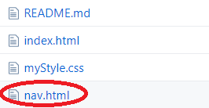
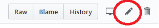
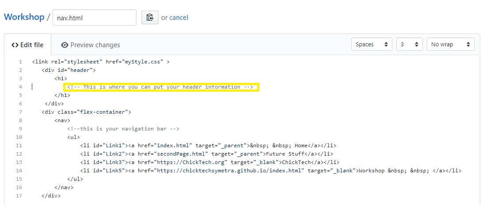
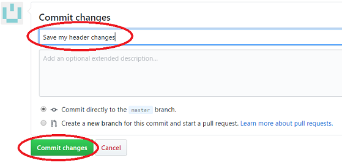

First, let's edit the file named nav.html. Click on it, then click the Edit icon on the upper right.
 
On line 4, replace the comment with whatever you would like on the top
of your pages. Be creative! It can be your name or an interesting phrase.

OK, let's "commit" our changes. If you scroll down on the page,
you'll see a box to Commit Changes. Enter a comment, and
click the Commit changes button.

Give it a minute, and...your page is now out there on the web!
Check it out by using a browser, and going to https://username.github.io